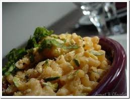

Pâtotto lardons courgettes
Ingrédients
4×
- 50 cl de bouillon de volaille
- 100 g de lardons
- 1 échalote
- 320 g de coquillettes
- 1 petite courgette en rondelles
- 20 cl de crème liquide
- 200 g de comté râpé
- 1 c. à s. de ciboulette

Préparation
Étape 1
Chauffer 50 cl de bouillon de volaille. Dans une autre casserole, rissoler quelques minutes 100 g de lardons, 1 échalote hachée et 320 g de coquillettes.
Étape 2
Verser la moitié du bouillon, mélanger et cuire 5min. Ajouter 1 petite courgette en rondelles et cuire encore 8min.
Étape 3
Chauffer 20 cl de crème liquide avec 200 g de comté râpé et l’incorporer en fin de cuisson. Saler, poivrer et parsemer de 1 c. à s. de ciboulette.
Résumé
50 cl de bouillon de volaille
100 g de lardons
1 échalote
320 g de coquillettes
rissoler
1 petite courgette en rondelles
cuire
20 cl de crème liquide
200 g de comté râpé
1 c. à s. de ciboulette
incorporer